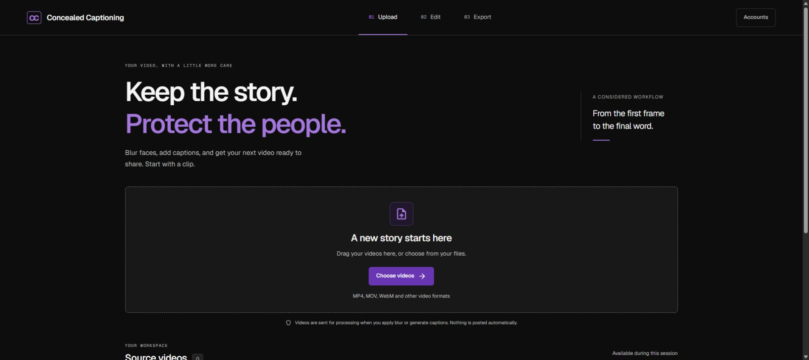
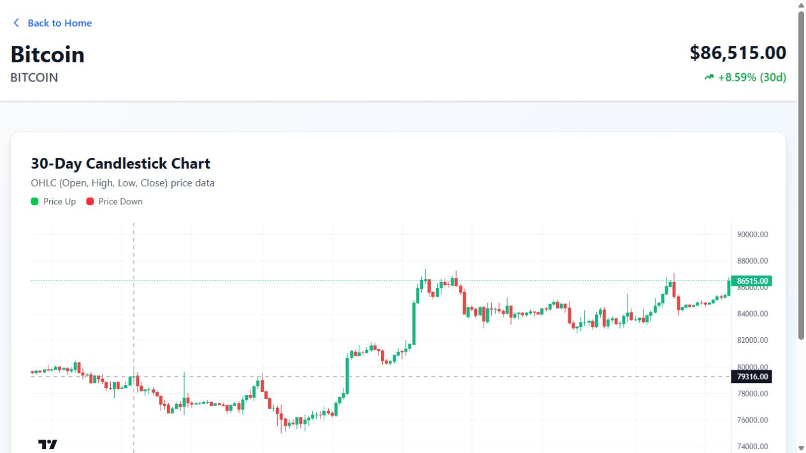
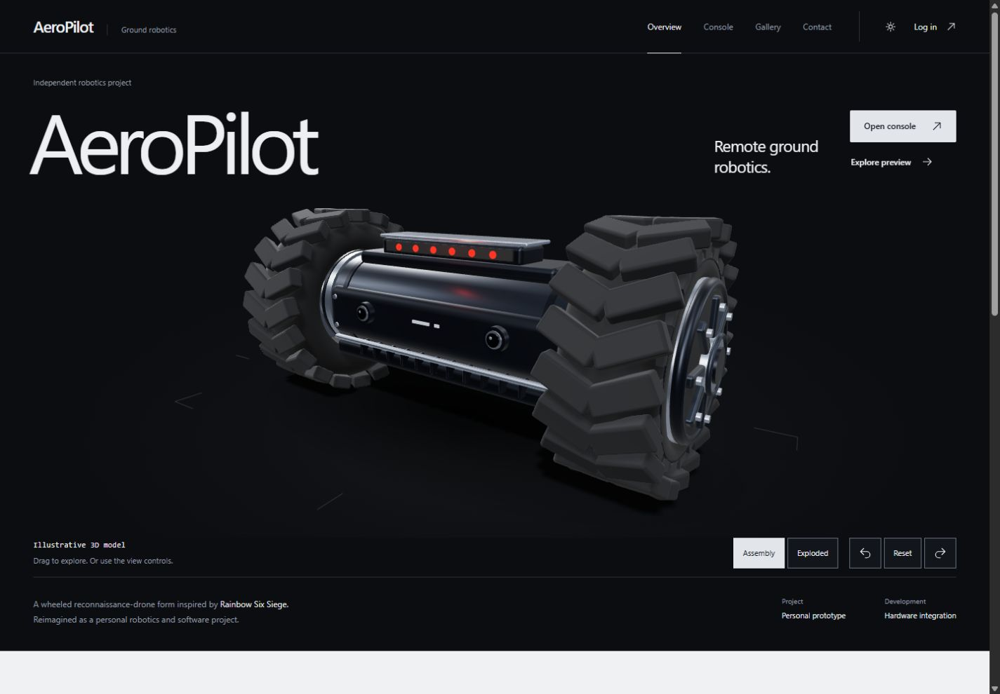
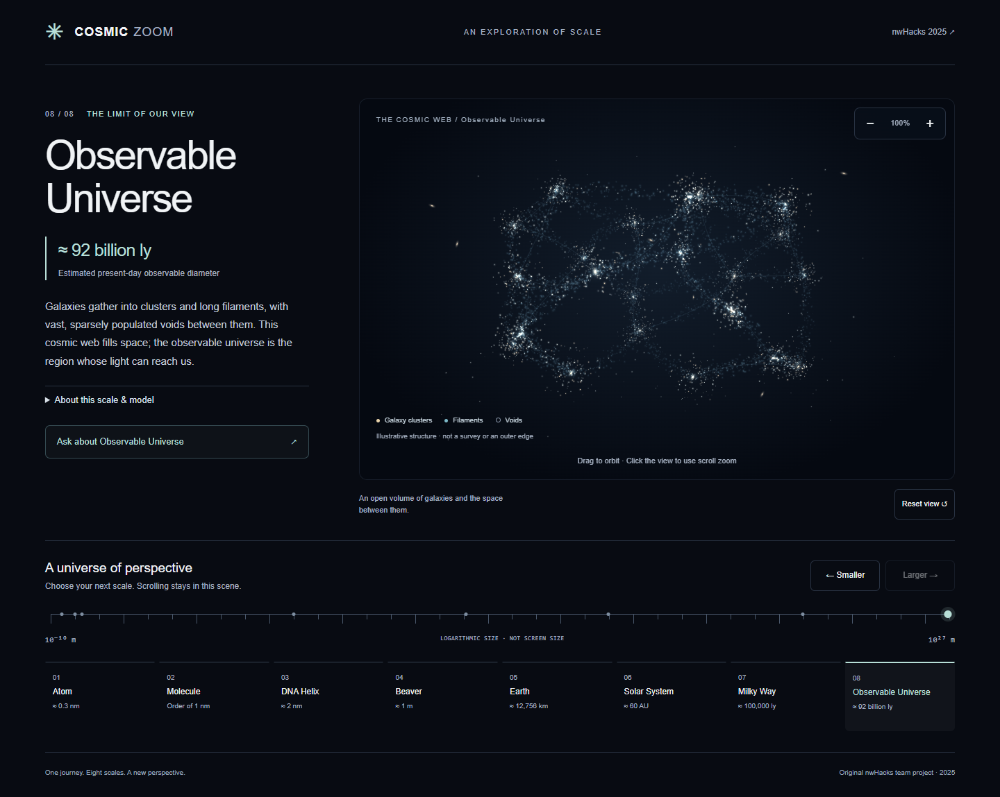
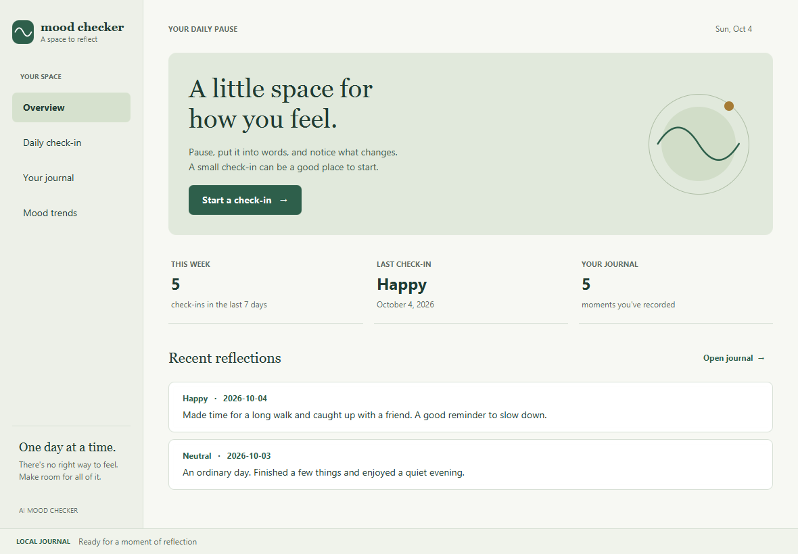

APP PREVIEW · VIEW SOURCEVIDEO EDITING / NWHACKS 2026
Concealed Captioning
A team-built hackathon prototype combining identity blurring, timed captions, and captioned-video export.
- Next.js
- TypeScript
- Python
- Whisper
- OpenCV
- FFmpeg
I’m Danial. I build things, stay curious,
and take the scenic route.
THINGS I’VE MADE ALONG THE WAY
A collection of experiments, weekend ideas,
and things I wanted to bring to life.

APP PREVIEW · VIEW SOURCEVIDEO EDITING / NWHACKS 2026
A team-built hackathon prototype combining identity blurring, timed captions, and captioned-video export.

EXPLORE THE DASHBOARDWEB APP / MARKET DATA
A cryptocurrency dashboard with name and symbol search, 30-day candlestick charts, and server-side caching.
C++ / BACKTESTING PROTOTYPE
A modular research project for testing SMA, EMA, and RSI strategies against historical data, with CSV/API inputs and configurable position sizing.

APP PREVIEW · VIEW SOURCEROBOTICS / GROUND ROVER
A browser-based control station for a Raspberry Pi ground rover, with keyboard controls, a camera interface, and an interactive 3D model. Inspired by Rainbow Six Siege.

VIEW THE PROJECTINTERACTIVE WEB / NWHACKS 2025
An immersive web experience combining 3D assets and interactive interfaces, built for a weekend of hackathon experimentation.

APP PREVIEW · VIEW SOURCEDESKTOP / PERSONAL REFLECTION
A desktop app for logging moods, writing reflections, and exploring patterns over time, with local persistence and interactive visualizations.
THE PERSON BEHIND THE PIXELS
I study CS & Statistics, with a concentration in Computer Science. I enjoy understanding how things work, experimenting with ideas, and building useful software.
This little world brings together my curiosity for technology, an eye for detail, and the things I’ve built along the way.
University of British ColumbiaCS & Statistics · CS concentration
Langara CollegeComputer Studies · 2021–2023